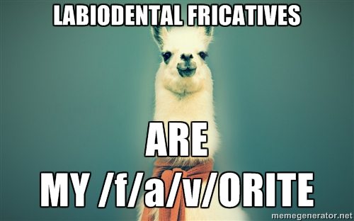
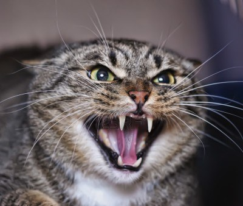
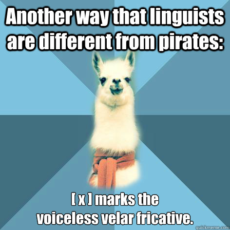
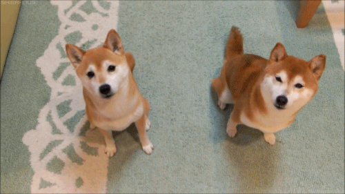
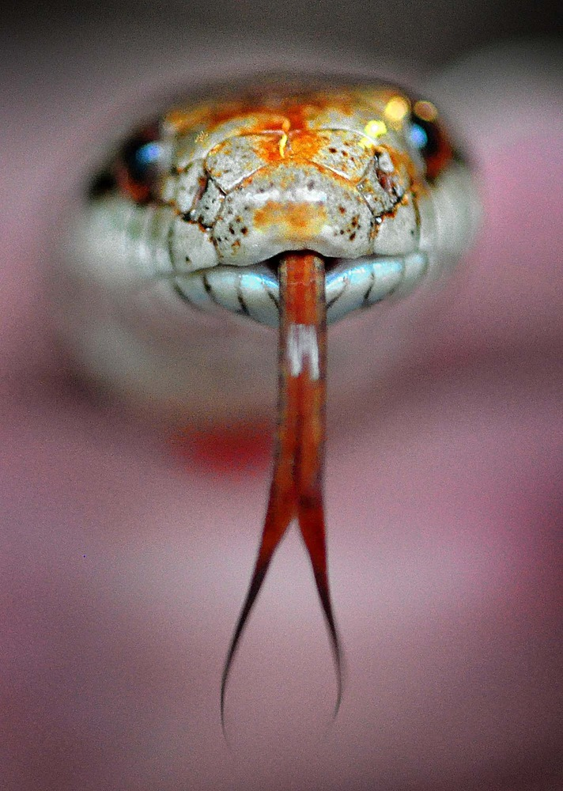
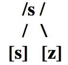
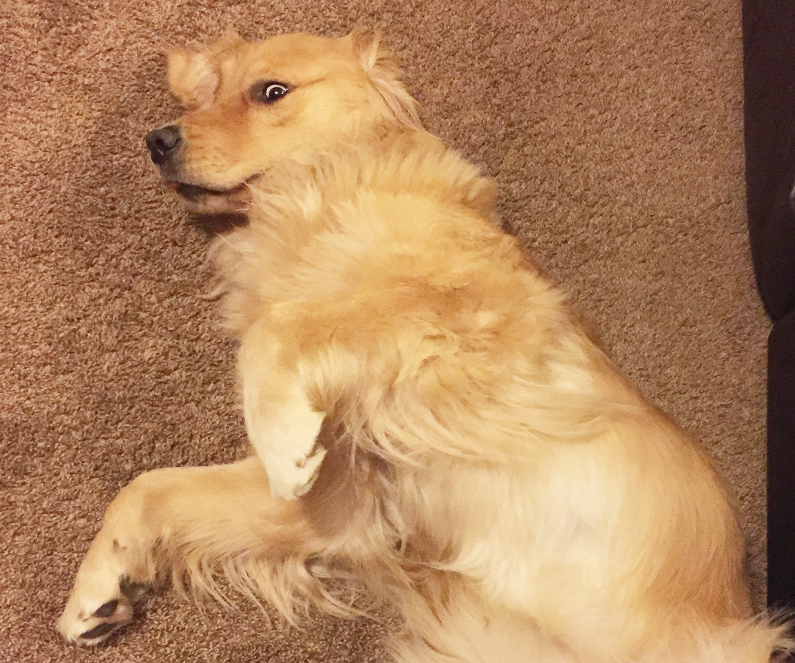

Fonética y español oral
Las fricativas /f, s, x/
Joseph V. Casillas
Instituto Franklin: otoño 2015
Repaso
En grupos...


¿Qué sabéis de las siguientes clases de sonidos?
- Las oclusivas sordas
- Las oclusivas sonoras
Comentad...
- los fonemas/alófonos relevantes
- los procesos fonológicos relevantes
- las diferencias entre el inglés y el español
- los retos que presentan para el no nativo
El efecto 'McGurk'
- ¿Qué es?
- ¿Qué nos enseña acerca de la percepción del habla?
El efecto 'McGurk'
El efecto 'McGurk'
Práctica
A transcribir
- No me digas ahora eso porque no lo entiendo
- Los dos hermanos salieron a pasear al parque
- Cuando Inés vino a cenar, le regalé dos flores
- La pared azul antes era blanca
- No te pongas esos pantalones porque están húmedos
- Justino, Antonio y Juan no son mis novios
- No voy al concierto contigo
- Los triptongos me asustan mucho de vez en cuando
- No contestes el teléfono si es para mí
- Al final sí encontré lo que me dijiste
- La cámara de gas no fue un buen invento de la humanidad
A transcribir
- Nomedigasahoraesoporquenoloentiendo
- Losdoshermanossalieronapasearalparque
- CuandoInésvinoacenar leregalédosflores
- Laparedazulanteserablanca
- Notepongasesospantalonesporqueestánhúmedos
- Justino, AntonioyJuannosonmisnovios
- Novoyalconciertocontigo
- Lostriptongosmeasustanmuchodevezencuando
- Nocontesteselteléfonosiesparamí
- Alfinalsíencontréloquemedijiste
- Lacámaradegasnofueunbueninventodelahumanidad
Transcripción
- /no.me.ˈdi.ga.sa.ˈo.ɾa.e.so.poɾ.ke.no.lo.en.ˈti̯en.do/
[no.me.ˈði.ɣa.sa.ˈo.ɾa.e.so.poɾ.ke.no.lo.en̪.ˈti̯en̪.do] - /los.do.seɾ.ˈma.no.sa.li̯e.ˈɾo.na.pa.se.ˈa.ɾal.ˈpaɾ.ke/
[loz.ðo.seɾ.ˈma.no.sa.li̯e.ˈɾo.na.pa.se.ˈa.ɾal.ˈpaɾ.ke] - /ku̯an.doi̯.ˈnes.ˈbi.no.a.θe.ˈnaɾ.le.re.ga.ˈle.dos.ˈflo.ɾes/
[ku̯an̪.doi̯.ˈnez.ˈβi.no.a.θe.ˈnaɾ.le.re.ɣa.ˈle.ðos.ˈflo.ɾes] - /la.pa.ˈɾe.da.ˈθu.lan.te.ˈse.ɾa.ˈblan.ka/
[la.pa.ˈɾe.ða.ˈθu.lan̪.te.ˈse.ɾa.ˈβlaŋ.ka] - /no.te.ˈpon.ga.se.sos.pan.ta.ˈlo.nes.poɾ.ke:s.ˈta.ˈnu.me.dos/
[no.te.ˈpoŋ.ga.se.sos.pan̪.ta.ˈlo.nes.poɾ.ke:s.ˈta.ˈnu.me.ðos] - /xus.ˈti.no‖an.ˈto.ni̯oi̯.ˈxu̯a.no.son.mis.ˈno.bi̯os/
[xus.ˈti.no‖an̪.ˈto.ni̯oi̯.ˈxu̯a.no.som.mis.ˈno.βi̯os]
Las fricativas /f, x/
/f/
El fonema /f/

- /f/: fricativa, labiodental, sorda
El fonema /f/
Es un fonema, hay pares mínimos
| Principio de palabra | Interior de palabra | |||
|---|---|---|---|---|
| fuente/puente | /ˈfu̯en.te/ /ˈpu̯en.te/ | afeite/aceite | /a.ˈfei̯.te/ /a.ˈθei̯.te/ |
El fonema /f/
Sólo tiene 1 alófono

El fonema /f/
Ortografía
- Correspondencia exclusiva
- 'f' = /f/ siempre
Pronunciación
- Igual que en inglés
- No presenta ningún problema para el no nativo

/x/
El fonema /x/

- /x/: fricativa, velar, sorda
El fonema /x/
Es un fonema, hay pares mínimos
| Principio de palabra | Interior de palabra | |||
|---|---|---|---|---|
| juez/nuez | /ˈxu̯eθ/ /ˈnu̯eθ/ | bajar/bañar | /ba.ˈxaɾ/ /ba.ˈɲaɾ/ |
El fonema /x/
Sólo tiene 1 alófono

Sin embargo, hay variación dialectal
- Se pronuncia con variados grados de fricción
- Muy débil en latinoamérica: [h] como en 'hat'
- Más fuerte en la península: [xh ] o [χ]
El fonema /x/
El fonema /x/
Problemas para el no nativo
- Casi ninguno
- La pronunciación [h] es común en muchas variedades del español
- Hay más problemas ortográficos
El fonema /x/
Ortografía
Ante 'a', 'o', 'u' = 'j'
- pijama
- jota
- jugo
Ante 'e', 'i' = 'j' o 'g'
- jefe - general
- jinete - gitano
Práctica
A transcribir
- No me digas ahora eso porque no lo entiendo
- Los dos hermanos salieron a pasear al parque
- Cuando Inés vino a cenar, le regalé dos flores
- La pared azul antes era blanca
- No te pongas esos pantalones porque están húmedos
- Justino, Antonio y Juan no son mis novios
- No voy al concierto contigo
- Los triptongos me asustan mucho de vez en cuando
- No contestes el teléfono si es para mí
- Al final sí encontré lo que me dijiste
- La cámara de gas no fue un buen invento de la humanidad
- /no.me.ˈdi.ga.sa.ˈo.ɾa.e.so.poɾ.ke.no.lo.en.ˈti̯en.do/
[no.me.ˈði.ɣa.sa.ˈo.ɾa.e.so.poɾ.ke.no.lo.en̪.ˈti̯en̪.do] - /los.do.seɾ.ˈma.no.sa.li̯e.ˈɾo.na.pa.se.ˈa.ɾal.ˈpaɾ.ke/
[loz.ðo.seɾ.ˈma.no.sa.li̯e.ˈɾo.na.pa.se.ˈa.ɾal.ˈpaɾ.ke] - /ku̯an.doi̯.ˈnes.ˈbi.no.a.θe.ˈnaɾ.le.re.ga.ˈle.dos.ˈflo.ɾes/
[ku̯an̪.doi̯.ˈnez.ˈβi.no.a.θe.ˈnaɾ.le.re.ɣa.ˈle.ðos.ˈflo.ɾes] - /la.pa.ˈɾe.da.ˈθu.lan.te.ˈse.ɾa.ˈblan.ka/
[la.pa.ˈɾe.ða.ˈθu.lan̪.te.ˈse.ɾa.ˈβlaŋ.ka] - /no.te.ˈpon.ga.se.sos.pan.ta.ˈlo.nes.poɾ.ke:s.ˈta.ˈnu.me.dos/
[no.te.ˈpoŋ.ga.se.sos.pan̪.ta.ˈlo.nes.poɾ.ke:s.ˈta.ˈnu.me.ðos] - /xus.ˈti.no.an.ˈto.ni̯oi̯.ˈxu̯a.no.son.mis.ˈno.bi̯os/
[xus.ˈti.no‖an̪.ˈto.ni̯oi̯.ˈxu̯a.no.som.mis.ˈno.βi̯os] - /no.boi̯.al.kon.ˈθi̯eɾ.to.kon.ˈti.go/
[no.βoi̯.al.kon̟.ˈθi̯eɾ.to.kon̪.ˈti.ɣo] - /los.tɾip.ˈton.gos.me.a.ˈsus.tan.ˈmu.ʧo.de.be.θen.ku̯an.do/
[los.tɾip.ˈtoŋ.goz.me.a.ˈsus.tam.ˈmu.ʧo.ðe.βe.θeŋ.ku̯an.do]
Repaso
En grupos...

Explícale a tu compañer@ los problemas a los que se enfrentan los angloparlantes con respecto a...
- las oclusivas sonoras del español (producción y percepción)
- la fricativa labiodental sorda
- la fricativa velar sorda (ortografía)
¿Cómo transcribirías esta frase para una variedad latinoaméricana? ¿y para una variedad peninsular?
- Tu hija quiere comprar zapatos nuevos.
En grupos...
Explícale a tu compañer@ los problemas a los que se enfrentan los angloparlantes con respecto a...
- las oclusivas sonoras del español (producción y percepción)
- la fricativa labiodental sorda
- la fricativa velar sorda (ortografía)
¿Cómo transcribirías esta frase para una variedad latinoaméricana? ¿y para una variedad peninsular?
- Tu hija quiere comprar zapatos nuevos.
/tu̯i.ha.ˈki̯e.ɾe.kom.ˈpɾaɾ.sa.ˈpa.tos.ˈnu̯e.bos/
[tu̯i.ha.ˈki̯e.ɾe.kom.ˈpɾaɾ.sa.ˈpa.toz.ˈnu̯e.βos]
/tu̯i.χa.ˈki̯e.ɾe.kom.ˈpɾaɾ.θa.ˈpa.tos.ˈnu̯e.bos/
[tu̯i.χa.ˈki̯e.ɾe.kom.ˈpɾaɾ.θa.ˈpa.toz.ˈnu̯e.βos]

/s/
El fonema /s/

Descripción articulatoria
- /s/: fricativa, alveolar*, sorda
* el punto de articulación es apico-alveolar en el español peninsular estándar
El fonema /s/
El fonema /s/
Es un fonema, hay pares mínimos
| Principio de palabra | Interior de palabra | |||
|---|---|---|---|---|
| soy/voy | /ˈsoi̯/ /ˈboi̯/ | peso/pelo | /ˈpe.so/ /ˈpe.lo/ |
El fonema /s/
Tiene 2 alófonos

- [s]: fricativa, alveolar*, sorda
- [z]: fricativa, alveolar*, sonora
La sonorización
- El proceso por el cual una consonante sorda pasa a ser sonora
- Se trata de un tipo de asimilación (asimilación regresiva)
- Es decir, la consonante en cuestión asimila el rasgo [+sonoro] de la consonante que le sigue
La regla

El fonema /s/

Problemas para el no nativo
- En cuanto a la producción de [s] y [z], ninguno
Se trata de problemas de...
- distribución
- interferencia
En inglés...
- 'z' = [z], pero sólo a veces en español
- 's' = [z] entre vocales y después de una consonante sonora
- 'housing'
- 'abs'
El fonema /s/

Ortografía
- El grafema 'z' se pronuncia [s], [θ] o [z] en función de la variedad
- pero SÓLO como [z] si aparece antes de una consonante sonora
Ejemplos
- desde --> /ˈdes.de/ → [ˈdez.ðe]
- rasgo --> /ˈras.go/ → [ˈraz.ɣo]
Ejemplos
- estás negro
- es noble
- es nuestro
Ejemplos
- estás negro → /es.ˈtas.ˈne.gɾo/ → [es.ˈtaz.ˈne.ɣɾo]
- es noble → /ˈes.ˈno.ble/ → [ˈez.ˈno.βle]
- es nuestro → /ˈes.ˈnu̯es.tɾo/ → [ˈez.ˈnu̯es.tɾo]
Ejemplos
Entre vocales sólo hay sordas
| Bien | Mal |
|---|---|
| vi[s]ita | *vi[z]ita |
| mi[s] amigos | *mi[z] amigos |

Fito y fitipaldis "Soldadito marinero"
Él camina de
en
Luego pa
él también qui
de e
E
Fito y fitipaldis "Soldadito marinero"
Él camina ðe
en
Lueɣo pa
él también qui
de e
E
Fito y fitipaldis "Soldadito marinero"
Él quería cruzar lo
la verdad no fue dificil cuando conoció a Mariela,
que tenia lo
¡Hay que ver que puntería no te arrima
de e
E
De
dime porqué e
Fito y fitipaldis "Soldadito marinero"
Él quería cruzar lo
la βerðað no fue ðificil cuando conoció a Mariela,
que tenia lo
¡Hay que βer que puntería no te arrima
de e
E
De
dime por qué e
Enemigo #3 (continuación)
Ejercicios

La asimilación (parte 2)
A transcribir (tarea)
- No me digas ahora eso porque no lo entiendo
- Los dos hermanos salieron a pasear al parque
- Cuando Inés vino a cenar, le regalé dos flores
- La pared azul antes era blanca
- No te pongas esos pantalones porque están húmedos
- Justino, Antonio y Juan no son mis novios
- No voy al concierto contigo
- Los triptongos me asustan mucho de vez en cuando
- No contestes el teléfono si es para mí
- Al final sí encontré lo que me dijiste
- La cámara de gas no fue un buen invento de la humanidad